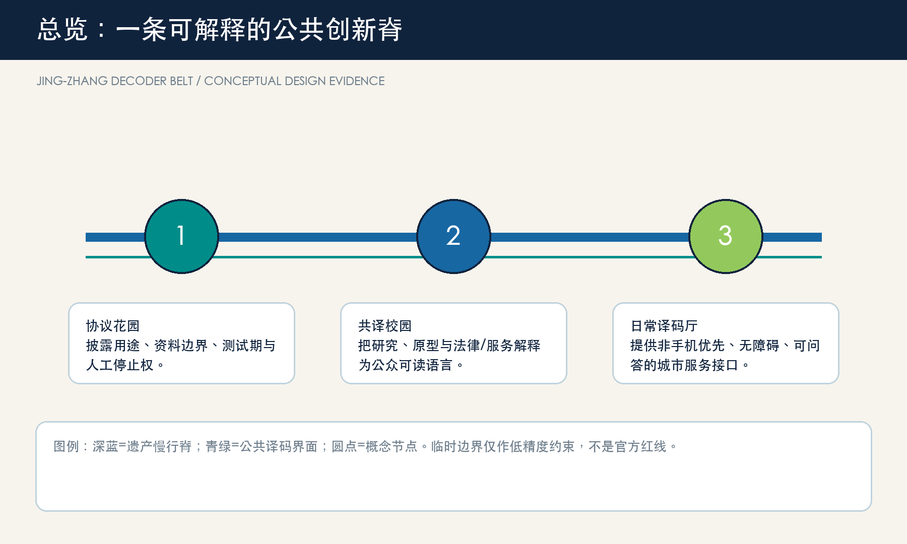

总览地图 三层范围 重点区域 用地分区 交通慢行 蓝绿公共空间 建筑 更新项目 AI 场景 核心指标 任务覆盖 自检状态 来源 假设

临时约束范围仅用于展示和自检；正式/清权边界发布后全包重算。
site area
11412825 sqm
11412825 sqm
green ratio
12.34%
12.34%
public space
7.33%
7.33%
AI 场景 / AI scenarios
10 cards: protocol gate, red-team review, low-carbon observation, translation desk, open-source stage, conversion clinic, question table, accessible wayfinding, slow-mobility note and repair receipt wall.
任务覆盖 / Task coverage
agent.1 identity; agent.2 ecosystem cases; agent.3 scenarios/personas; agent.4 public-space landmarks; agent.5 cultural story; agent.6 annual operating loop.
自检状态 / Self-check
Prepared for deterministic, spatial, visual and professional review.
来源 / Sources
Official announcement, cleared agent taskbook, repository source registry, and five cited public case pages.
假设 / Assumptions
Controls, ownership, roads, municipal capacity and heritage limits remain pending professional confirmation.